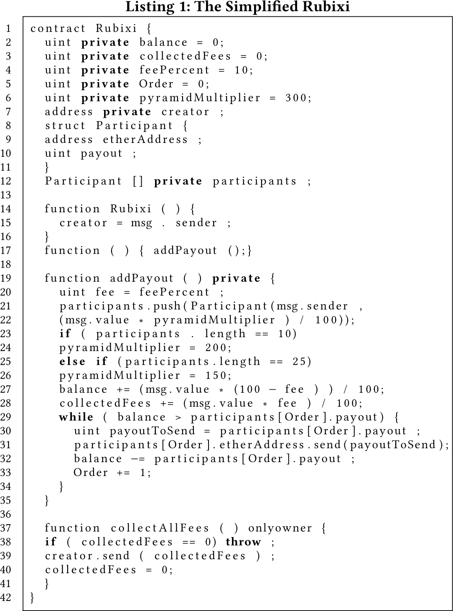

This is a web copy of https://doi.org/10.1145/3178876.3186046. Published in WWW2018 Proceedings © 2018 International World Wide Web Conference Committee, published under Creative Commons CC By 4.0 License. The modifications from the original are solely to improve HTML aiming to make it Findable, Accessible, Interoperable and Reusable. augmenting HTML metadata and avoiding ACM trademark. To reference this HTML version, use:
Permalink: https://w3id.org/oa/10.1145/3178876.3186046
DOI: https://doi.org/10.1145/3178876.3186046
WWW '18: Proceedings of The Web Conference 2018, Lyon, France, April 2018
Blockchain technology becomes increasingly popular. It also attracts scams, for example, Ponzi scheme, a classic fraud, has been found making a notable amount of money on Blockchain, which has a very negative impact. To help dealing with this issue, this paper proposes an approach to detect Ponzi schemes on blockchain by using data mining and machine learning methods. By verifying smart contracts on Ethereum, we first extract features from user accounts and operation codes of the smart contracts and then build a classification model to detect latent Ponzi schemes implemented as smart contracts. The experimental results show that the proposed approach can achieve high accuracy for practical use. More importantly, the approach can be used to detect Ponzi schemes even at the moment of its creation. By using the proposed approach, we estimate that there are more than 400 Ponzi schemes running on Ethereum. Based on these results, we propose to build a uniform platform to evaluate and monitor every created smart contract for early warning of scams.
ACM Reference Format:
Weili Chen, Zibin Zheng, Jiahui Cui, Edith Ngai, Peilin Zheng, and Yuren Zhou. 2018. Detecting Ponzi Schemes on Ethereum: Towards Healthier Blockchain Technology. In WWW 2018: The 2018 Web Conference, April 23–27, 2018, Lyon, France. ACM, New York, NY, USA, Article 4, 10 Pages. https://doi.org/10.1145/3178876.3186046
The creation of Bitcoin makes value transfer between anonymous participants possible without relying on authoritative third-parties [27]. Bitcoin combines many mature technologies such as digital signature schemes, the proof-of-work mechanism, distributed technologies, and so on. Blockchain, an important part of Bitcoin, is a continuously growing list of records of value transfer transactions maintained by a peer-to-peer network through a distributed consensus mechanism. Blockchain is now a hotspot in both academia and industry [36, 43]. Bitcoin and the derived blockchain technology are usually referred as the next generation of Internet [9], as they create an Internet of Value compared with the traditional Internet of Information.
Many projects based on blockchain have been created. Ethereum is an open-source blockchain based distributed platform. The corresponding coin of Ethereum is called Ether. Ethereum provides a Turing-complete virtual machine to execute smart contrasts. A smart contract is a computer protocol between mutually distrusting participants, which is automatically enforced on the blockchain when preset conditions are met [4, 37]. The execution of smart contracts cannot be terminated and does not rely on trusted authorities. Smart contracts can be applied in various domains [7, 15, 30]. Blockchain platforms that support smart contracts are considered as the second-generation blockchain [9].
Any new technologies are vulnerable to exploitation by scams. For example, the rise of email creates a lot of spams. Blockchain, as an emerging technology, also attracts many scams because of its lack of regulation and anonymous characteristic. Ponzi scheme, a classic fraud named after a notorious fraudster of almost 100 years ago, also has its blockchain-based form [3, 38]. A Ponzi scheme is a fraudulent investment operation where the operator generates returns for older investors through revenue paid by new investors, rather than from legitimate business activities or profits of financial trading [39]. In Ponzi scheme, many participants, especially those posteriors, will lose most of their invested money. Obviously, Ponzi schemes hurt the economy and are prohibited in many countries. It has been reported that all kinds of Ponzi schemes are making big money off people who want to participate in the blockchain technology but do not understand how it works [16, 25, 35]. A recent study estimates that more than 7 million USD has been gathered during September 2, 2013 to September 9, 2014 by scams in Bitcoin [38].
Nowadays, many Ponzi schemes disguised themselves under the veil of smart contracts [3]. We refer these Ponzi schemes as smart Ponzi schemes and the corresponding smart contract Ponzi scheme contract. Since participants’ confidence in continuously paying back is a key factor in successful operation of Ponzi schemes, smart contract seems to be an attractive tool for Ponzi schemes as it is automatically enforced and cannot be terminated on blockchain. More importantly, the promoters stay anonymous. Fig. 1 displays the propaganda picture of a typical smart Ponzi scheme. The propaganda words are as the following:
”Hello! My name is Rubixi! I'm new & verified pyramid smart contract on the Ethereum blockchain. When you send me 1 ether, I will multiply the amount and send it back to your address when the balance is sufficient. My multiplier factor is dynamic ( min. x1.2 max. x3 ), thus my payouts are accelerated and guaranteed for months to come”
As publicized, the smart contract was relatively profitable and the returns seem guaranteed to come soon. However, the true payment is far from described. Through manually checking the contract transactions, we found that there are 112 participants in the contracts, but only 22 participants make a profit from the contract. The two luckiest participants take more than 40% of the profit, while the creator is one of them. Obviously, this contract hurts most other participants.
Examples introduced above vividly show that detecting blockchain-based Ponzi schemes is an urgent task. Although some users are perfectly conscious of the possible loss when participating in Ponzi schemes [24, 29], detecting latent Ponzi schemes is still a challenge, because 1) users and investors find it complicated to understand what blockchain is, so they may let alone the fraudulent scams behind it; 2) for national authorities and regulators, the blockchain technology is very new and somehow lives in the gray area of legal system [12]. Therefore, to make the blockchain related markets healthy and rightful, developing technologies to detect blockchain-based Ponzi schemes is not only urgent but also crucial.
Detecting blockchain-based Ponzi schemes is not an easy problem as users of blockchain are essentially anonymous. Given that a smart contract is composed of code, it is possible to manually check whether a smart contract is a Ponzi scheme by going through its source code. However, what makes things worse is that the source codes of smart contracts may be hidden. In fact, only bytecodes are needed for a smart contract to be implemented on the Ethereum blockchain. There are now more than one million smart contracts running on Ethereum, but only less than four thousands of them have source codes1. It implies that not only the creator but also the logic of a latent smart Ponzi scheme is hidden. This raises many questions: How many smart Ponzi schemes exist on Ethereum? What types of smart Ponzi schemes are there? What are their characteristics? How much is the influence of smart Ponzi schemes? Before answering these questions, the first and most important question to answer is: how to detect smart Ponzi schemes without source codes?
To establish an effective model for detecting smart Ponzi schemes without source codes, we need 1) enough contracts that have labels (determined whether they are smart Ponzi schemes) and 2) effective features which can be extracted without source codes. To this end, as shown in Fig. 2, we first download 3071 verified smart contracts including normal transactions, fired transactions and source codes. Then the source codes were compiled to bytecodes and the bytecodes dissembled to operation codes (See Section 2 for detailed information). Next, the account features are extracted from the transactions; the code features are extracted from the operation codes. Finally, a classification model based on XGBoost is proposed.
A key contribution of the paper is an experimental validation of the feasibility of detecting smart Ponzi schemes at the moment of its creation. Because we extracted code features from operation codes which is public accessible after the contract deployed. This result is of great significance because by using the model we can: 1) detect smart Ponzi schemes even the source codes are intentional hidden; 2) detect smart Ponzi schemes before it causing any damage; and 3) build a risk warning platform based on it.
The remaining of this paper is organized as follows. Section 2 provides a brief introduction of the Etherem platform and some key concepts. A detailed description of the data, the extracted features and the classification model are presented in Section 3. Experimental results and analysis are summarized in Section 4. Finally, we summarize the related work in Section 5 and conclude the paper in Section 6.
This section briefly introduces Ethereum and smart contracts. First of all, we introduce the Ethereum platform and its state transaction mechanism. Then the source code snippet of a Ponzi scheme contract is provided. Finally, operation code, the mnemonic form of bytecode and the main source of features in our model, is introduced.
Ethereum is a blockchain platform with an Ethereum Virtual Machine (EVM), which can execute code of arbitrary algorithmic complexity and allows users to create blockchain applications by a few lines of code [4].
Technically, the EVM is the runtime environment for EVM bytecode, which is a Turing-complete programming language. Smart contracts based on Ethereum is a series of EVM bytecode. It takes three steps to create a smart contract based on Ethereum: 1) write the smart contract source code in a high-level language, for example, Solidity2; 2) compile the source code into bytecode using the EVM compiler; and 3) upload the bytecode to the blockchain with an Ethereum client.
From the technical standpoint, a blockchain system can be considered as a state transition and maintenance system [4]. In Ethereum system, the state consists of all accounts - in twenty-byte address3. The account contains four fields to determine a unique status of it. The four fields are the nonce, the Ether balance, the contract code and the storage. The first two fields usually change when a transaction occurs. A transaction is usually a message sending from one account to another with binary data (its payload) or Ether. Take account A sending 5 Ether to account B as an example, this is a typical transaction, which will reduce the balance of A and increase the balance of B by 5 Ether. The nonce of each account will increase one to make sure that the transaction can be processed only once. If presented, the code will execute with the payload as input data and the storage as temporary space. For example, a sending Ether transaction from a victim to a Ponzi scheme contract may trigger payment transactions to previous participants. Under this situation, we call the sending Ether transaction as normal transaction and the triggered payment transactions as fired transactions.
In Ethereum, transactions occurred in a certain period of time are packaged into blocks and appended into a public and append-only ledger, i.e., the blockchain. Each transaction is executed independently by miners, the maintenance nodes of the Ethereum network. Miners are mutually untrusted peers and they can validate execution result from other miners. To encourage miners to maintain the blockchain, each transaction is charged with a certain amount of fees, according to the consumed resources used for validating the transaction. The consumed Gas (a special unit used in Ethereum to measure how much work a transaction takes to perform) multiplying the user-defined Gasprice is the fee for the transaction, which is same as the reward for the miners. The execution of a transaction may be failed, for example, the transaction is out of Gas, then all the side effects are reverted but the fee is lost. Thus, ensuring enough gas is very important for initiating a transaction, especially for those sending Ether transactions.
Consensus protocol is employed to maintain a unique state of Ethereum in a certain time period. The consensus protocol of Ethereum is based on Proof of Work (PoW), similar to Bitcoin. This means that the Ethereum system will be safe unless a particular attacker owning 51% computing power of the whole network. Trust is built among Ethereum users for its transparent code execution process.
As mentioned above, smart contracts are usually written in high-level languages. Solidity is a contract-oriented, high-level language whose syntax is similar to that of JavaScript. Solidity is an important language in the Ethereum platform which running on EVM.
To understand how to identify a smart Ponzi scheme from its source code, we present a simplified smart contract written with solidity (Listing 1). The code snippet is extracted from Rubixi, left only the key code for understanding why it is a smart Ponzi scheme. Generally speaking, a smart contract consists of two parts: functions and data. Functions can be called by transactions or messages from other accounts or contracts. During the execution of a function, the data of that contract can be renewed.
The codes from line 2 to 11 of Listing 1 are data definition, which are used to describe the current state of the contract. For example, balance records the current balance of the smart contract and the structure Participant records the investor's address and payment. The function Rubixi in line 14 is the constructor which runs only once when the contract is created.
The function with no name in line 17, which contains only a function call to addPayout, is called fallback function. It is executed when an account sends Ether to the contract without data. Thus, when a participant invests Ether to the contract, the function addPayout, defined in line 19, is triggered. This function is the key of the contract as it implements the main logic of a Ponzi scheme: 1) records the address and payment of the investor (line21–22); 2) calculates fees (line 28); and 3) pays to previous investors when the balance is enough (line 29–34).
The array participants defined in line 12 records all the investors in order, including address (msg.sender) and payment (payout=msg.value *pyramidMultiplier)/100). Note that the propagated high profit (see Fig. 1) is controlled by the variable pyramidMultiplier, which was first set to 300 (line 6), but then reduced to 200 (line 23) from the 10th participant and 150 (line 25) from the 25th participant. Obviously, to attract early participants, the contract owner promised a higher profit for them. It is worth mentioning that pyramidMultiplier should be set to above 100 for the promised profit of participants.
Taking fees from participants is the main purpose of operating a Ponzi scheme. It can be seen clearly from the code snippet that Rubixi charges every investment 10 percent, and the fees are collected by calling the function collectAllFees in line 37. The while loop from line 29 to line 34 tries to pay all the previous participants by their investment order until the balance is not enough. This piece of code clearly shows the logic of the contract payment, which obviously can be identified as a Ponzi scheme.
As seen from the code snippet, two kinds of transactions may occur to a smart contract: normal transactions and fried transactions. These transactions are publicly available and can be downloaded from ethereum.io4 using the provided API.

As mentioned above, an Ethereum contact is a series of “Ethereum virtual machine code” or “EVM code” residing in the Ethereum blockchain. We call this bytecode of a contract. In order to write smart contracts conveniently, a high-level language is used (e.g., the Solidity language). Thus, to deploy a contract, the first thing to do is to compile the source code into EVM bytecode. The EVM bytecode is composed of a series of bytes. Each byte is an operation. For human readable, each operation corresponds with a mnemonic form. For example, the mnemonic form of EVM bytecode 0x10 is LT, which means less-than comparison. We call LT and such mnemonic form of EVM bytecode as opcode. The appendix of Ethereum yellow paper [40] contains a complete list of the EVM bytecode and its mnemonic form, i.e., opcode. A disassembler5 can be used to get the operation code of a contract from bytecode. Operation code consist of a series of opcode and operand. For example, the first 5 rows of the operation code in Rubixi are: PUSH1 0x60; PUSH1 0x40; MSTORE; CALLDATASIZE; ISZERO. PUSH1 is an opcode and 0x40 is an operand.
To make the contract callable from other accounts, the bytecode of a smart contract should be deployed in the main Ethereum network. A special transaction targeted to the zero-account (the account with the address 0) creates a new contract. The bytecode of the contract provides as the payload of that transaction and will be executed; the result will be stored in the code field of the new contract account and be record permanently on the blockchain until the contract being killed by the creator. The address of the new contract will return to the creator, which can then be shared with the others.
In order to establish an effective model to detect smart Ponzi schemes, 1382 verified smart contracts were collected from the Website http://etherscan.io. Reported by a previous study [3] these smart contracts were inspected manually to check whether it is a smart Ponzi scheme or not. We recheck the results and tidy them as ground truth data in our model. Specifically, 131 Ponzi scheme contracts and 1251 non-Ponzi scheme contracts were collected. To establish the model, we downloaded the corresponding data and extracted two categories of features from the data. This section provides an overview of the data and features. The feature extraction method is also introduced.
As seen from Fig. 2, two kinds of data including transactions and source codes were collected. The transaction data contain normal transactions and fired transactions in form of JSON files. All these data were collected through the APIs provided by etherscan.io6. Please visit our website7 for more detailed information. It is worth noting that only the last 10000 transactions can be download due to the limitation of ethescan.io. However, this limitation has only a little influence to our study and was ignored.
The source code of a contract is very important for detecting its function. However, open source code is not compulsory, though it is suggested for public inspection on the Ethereum platform. In order to establish a practical model that can be used to detect latent smart Ponzi schemes, we rely on only bytecode, which is publicly available for any contract. We first compile source code by using the Ethereum local client to get the bytecode. Then, a disassembly tool is used to get the operation code. Finally, we extract all the opcodes and calculated their frequency in a contract.
Due to the fraudulent behavior, Ponzi schemes have several unique features compared with normal organizations. There are at least three characteristics in Ponzi contracts: 1) these contracts usually send Ether to accounts once investing to the contract; 2) some accounts receive more counts of payment than investment, For example, the creator who charge fees frequently from the contract; and 3) the balance of the contract may be low, as a Ponzi scheme is always trying to maintain an image of fast and high return.
The intrinsic characteristics of a Ponzi scheme determine its behavior, which can be used to judge whether it is a Ponzi scheme. The Ether flow of a contract is a good representation of such behavior. To show the behavioral characteristics, we introduce Ether flow graph of a contract, drawing by using the corresponding transactions. Unlike commonly used cash flow graph, an Ether flow graph is used to display transactions between the contract and its participants. The transactions have two directions: the participant either sends or receives Ether from the contract. We denote the first direction as investment transaction and the second as payment transaction of the participant. The investment transitions are denoted by red circles and the payment transactions are denoted by green triangles in the graph. The x-axis represents the time line, while the y-axis represents individual participants. By reading the graph, we can easily see the transactions that each participant are involved along the time line. The corresponding Ether amounts in the transactions are reflected by the size of the circles or triangles. The transactions between the contract and a participant are arranged in a horizontal line in order of the transactions’ timestamps. Participants are ordered by the timestamp of their first transaction with the contract. Thus, the 0th participant is usually the creator of the contract. In general, an investment transaction should be followed by a payment transaction in normal economic activity, but it is not true in a smart Ponzi scheme.
Fig. 3 and 4 display the Ether flow graphs of two contracts: Rubixi and LooneyLottery. Rubixi is a typical smart Ponzi scheme and LooneyLottery8 is a normal lottery game contract. The Ether flow graph of Rubixi contract (Fig. 3) shows that the creator of the contract and its very early participants are winners of the game. There are almost 120 participants involved in the contract, but most payments pertain to the first 25 lucky participants. Notably, there is an abnormal behavior pertaining to the 54th participant (presented as a gray dashed line in the graph), as he or she sent only twice but received payments many times. This abnormal behavior occurs because there is a bug in the source code which can be used to change the owner of the contract and collect fees [2].
A significant difference can be found between the two figures: Fig. 3 contains more participants, but many participants interact less with the contract as compared with Fig. 4. From the payment perspective, each contract has relatively few payments, however, most payments in Fig. 3 pertain to the anterior participants but payments in Fig. 4 exhibit more randomness. These differences can be easily derived by the function of the contract. Thus, in turn, the account behavior can be used to classify smart contracts.
Through inspecting the Ether flow graph of Rubixi, we can find that: 1) the payment transactions usually occurs after an investment transaction, which indicates that the contract usually pays to known accounts; 2) many investment transactions have no followed payment transactions; and 3) some participants have more payment transactions than investment transactions. Based on these observations and characteristics: we extract seven key features in contracts as follows:
Table 1 shows three statistics of the extracted features: mean, median and standard deviation (Sd). The table contains two parts: the upper part is the result of all Ponzi scheme contracts and the bottom part is non-Ponzi scheme contracts.
| Ponzi Scheme contracts | |||||||
| Kr | Bal | N_inv | N_pay | D_ind | Pr | N_max | |
| Mean | 0.89 | 4.65 | 56.84 | 92.49 | -1.04 | 0.62 | 36.12 |
| Median | 1.00 | 0.26 | 17.00 | 21.00 | -0.65 | 0.66 | 11.00 |
| Sd | 0.29 | 15.51 | 119.41 | 204.71 | 1.95 | 0.30 | 94.36 |
| Non-Ponzi Scheme Contracts | |||||||
| Kr | Bal | N_inv | N_pay | D_ind | Pr | N_max | |
| Mean | 0.49 | 22319.60 | 653.44 | 540.74 | -0.51 | 0.43 | 237.95 |
| Median | 0.50 | 0.10 | 6.50 | 4.00 | 0.00 | 0.40 | 2.00 |
| Sd | 0.43 | 187549.23 | 3986.45 | 2195.42 | 6.05 | 0.41 | 1095.08 |
As seen clearly from the table, the statistics between Ponzi scheme contracts and non-Ponzi scheme contracts are hugely different. For example, the median of Known rate (Kr) of Ponzi scheme contract is 1 but only 0.5 for non-Ponzi scheme contracts. The high Kr of Ponzi scheme contract shows that many contracts pay to those once invested it, which is a significant feature for Ponzi scheme contract. As for balance (Bal), the difference between the medians of the two scheme is minor, but the difference of standard deviations (Sd) is very large. The low standard deviation of Ponzi scheme contracts indicating that many contracts have relatively low balance. On the other hand, the high standard deviation of non-Ponzi scheme contracts indicates that some contracts have very large balance. Meanwhile, as the median of non-Ponzi scheme contracts is only 0.1, which means that half of non-Ponzi scheme contracts have a balance less than 0.1. As a matter of fact, many non-Ponzi scheme contracts have zero balance.
Opcodes are successful in analyzing the latent problem of smart contracts as it reflects the logic of smart contracts from the aspect of Ethreum Virtual Machine (EVM) [2, 6]. We expect that features extracted from opcodes are useful in detecting latent smart Ponzi schemes. We extracted all the opcodes and calculated their frequency. 64 different opcodes are found in the 1382 contracts’ operation codes.
Fig. 5 shows the cloud graphs of opcodes in the aforementioned two smart contracts. Three most frequent opcodes, PUSH, DUP and SWAP are removed to make the graphs more easily seen. This is because EVM is stack-based, these opcodes appear frequently in every contract.
Although it is impossible to identify the type of smart contract just by observing the cloud graph of opcode, it is easy to see that the two smart contracts are obviously different. Intuitively, there are at least two significant differences: Rubixi contains more judgments and LooneyLottery contains more randomness. Actually, the first difference can be seen clearly from the graph, the Rubixi contract contains relatively more JUMPI (7.8%), and the LooneyLottery contract contains more JUMP (2.6%). The difference between these two opcodes is that the former is a conditional version of the latter. To detect the second difference needs more observation. The LooneyLottery contract contains 4 TIMESTAMPs while the Rubixi contains none. The reason is that the opcode TIMESTAMP is used to get the block's timestamp, which is a commonly used as a random variable of the system. The above analysis indicates that opcode features may be feasible in detecting Ponzi scheme contracts.
In order to distinguish Ponzi scheme contracts from other smart contracts with high accuracy and low false positives, we use XGBoost, which is one of the most popular machine learning algorithms and is proved to be a good method in many problems [5]. This subsection provides a simple introduction of XGBoost and its parameters.
XGBoost is short for “Extreme Gradient Boosting” and is an improved version of gradient tree boosting [13]9. Unlike GBM, XGBoost introduced two important improvements: regularization and tree pruning. Basically, XGBoost provides a regularization in the objective function, which is used to avoid overfitting in the tree-based model. Meanwhile, it changed the tree pruning method from stopping when a negative loss encountered to the post-pruning.
Specifically, suppose there are N smart contracts in the dataset {(xi , yi ) | i = 1, 2, …, N}, where xi ∈ Rd is the extracted features associated with the i − th smart contract, yi ∈ {0, 1} is the classification label, such that yi = 1 if and only if the smart contract is a verified Ponzi scheme contract. We use XGBoost aiming to minimize the following objective function:
Unlike traditional classification model which directly returns the class label, we train a logistic regression model for binary classification, which outputs a probability. Any contract with the predicted probability larger than 0.5 is considered as a Ponzi scheme contract. The corresponding logistic loss function is as follows:
As for the regulation term, the first thing to do is redefining a tree that is convenient to measure the complexity. In XGBoost, a tree is a function that maps an instance to a leaf weight. Specifically,
To ensemble trees, the objective function is rewritten as follows
For the learning process, XGBoost introduces additive training, which starts from constant prediction and adds new function each time as follows:
In this section, we present our experimental results. First, we describe the experiment settings and evaluation metrics. Then, the experiments based on the comparison of the two categories of extracted features are summarized. Finally, we analyze the importance of features.
Datasets. In order to compare the discriminative power of the two categories of features, we conduct experiments on three kinds of features: account, opcode and their combination. For all the three experiments, we first adopt 5-fold cross-validation to find the best parameters of the model and then we split the corresponding data into 80% for training and 20% for testing and conduct the experiment for ten times by using the best parameters found. The average results are summarized in Table 2.
Evaluation metrics. Different from the commonly used metrics of error rate in classification problems, we use three metrics, precision, recall, and F-score, to evaluate the performances of the model. Here is a brief introduction:
Table 2 summarizes the performances of the three kinds of features in detecting Smart Ponzi schemes.
| Features | Precision | Recall | F-score |
| Account | 0.74 | 0.32 | 0.44 |
| Opcode | 0.90 | 0.80 | 0.84 |
| Account + Opcode | 0.94 | 0.81 | 0.86 |
Several conclusions can be made from the table. First, the account features, to our surprise, are not efficient in detecting smart Ponzi scheme. We expected that the account features would have a good performance, as smart Ponzi schemes behave differently. However, the low recall shows that the model based on these features is almost useless. In contrast, the opcode features are very efficient as expected. The possible reason of this result may be that many smart contracts are experimental, which makes it hard to detect their types from behavior. In fact, many smart contracts have no transactions. Another possible reason is that the number of account features is too few. Second, the corresponding metrics show that modes based on just opcode features can be used for detecting smart Ponzi schemes. Finally, the performance of the model can be improved by combining opcode features with account features.
To further understand the discriminative power of the extracted features, we display the ten most significant features in Fig. 6. The description of opcodes in the graph are summarized in Table 3.
It can be seen clearly from the graph that the most significant feature is GASLIMIT, which is used to get the block's gas limits. To better understand why GASLIMIT is the most significant feature, we first calculate the number of contracts that have the opcode and find that 57% of the Ponzi scheme contract has it compared with only 4% in non-Ponzi scheme contracts. Thus smart Ponzi contracts are more referring to the block's gas limits as compared with other contracts. However, this result is against common sense because getting the block's gas limit is completely unnecessary for a smart Ponzi scheme. In order to find the real reason, we selected some source codes of Ponzi scheme contracts which have GASLIMIT in their operation codes. We hope to find out what source code brings this. We find that these contracts import oracle APIs which results in the opcode.
| Opcode | Description |
| GASLIMIT | Get the block's gas limit. |
| EXP | Exponential operation. |
| CALLDATALOAD | Get input data of current environment. |
| SLOAD | Load word from storage. |
| CALLER | Get caller address. |
| LT | Less-than comparision. |
| GAS | Get the amount of available gas. |
| MOD | Modulo remainder operation. |
| MSTORE | Save word to memory. |
Another worth mentioning opcode is CALLER, which is used to get the caller address. Remember, smart Ponzi schemes need to record those investors. Majority of the rest of the opcodes are arithmetic-operation-related. Generally speaking, those opcodes seem to indicate a class of special contracts that have more payment transactions, need to remember caller and have many arithmetic operations. Thus, Ponzi scheme contract belongs to it.
Only one account feature (D_ind) is found in the ten most important features. This is not surprising, since the difference index is a discriminative account feature as discussed in Section 3.2.
To estimate the number of smart Ponzi schemes on Ethereum, the previous study detects hidden smart Ponzi schemes (Ponzi scheme contracts without source codes) by using similarity between two bytecode files [3]. 54 hidden smart Ponzi schemes were found in the paper. To verify the reliability of our model as compared with it, we predict the 54 hidden contracts with the model based on code features. The result shows that 45 out of 54 (83%) contracts are smart Ponzi schemes. In order to understand why the remainder 9 contracts failed to be detected as Ponzi scheme contracts by our model, we manually check all their transactions. The findings are as follows:
These findings suggest that our model is more accurate in detecting smart Ponzi schemes compared with bytecodes similarity.
To estimate how many smart Ponzi schemes on Ethereum, we first downloaded all the contracts created before May 7, 2017 (the same date range as in [3]). We obtained 280704 contracts in total. Then we extracted all the opcode features of these smart contracts and predicted with our model. 386 smart Ponzi schemes (include these verified) were found by the model. Thus it is estimated that almost 434 (386 × precision/recall) smart Ponzi schemes run on Ethereum platform before May 7, 2017, accounting for 0.15% of all the contracts. Fig. 7 shows the counts of detected smart Ponzi schemes with corresponding scores (probabilities). It can be seen clearly from the graph that much more detected smart Ponzi schemes have relatively high scores, indicating that the problem of Ponzi schemes is more serious than estimated. As a matter of fact, only 191 smart Ponzi schemes reported in the recent study [3], which is much less than the number estimated here.
Since the creation of bitcoin, blockchain technology became a research hotspot. Three types of research can be found in the literature. The first type focuses on the underlying mechanism. Many consensus mechanisms were proposed, such as proof of stake (PoS) [17], practical byzantine fault tolerance (PBFT) [14, 21] and ripple [34]. Furthermore, some research focused on improving the existing mechanism [11]. The second type discusses the application of blockchain technology. Since blockchain technology has many favorable characteristics, many applications can be found in finance service [20, 31], Internet of things (IoT) [7, 10],and social services [28]. The last but the most related type of work is data mining on blockchain. Thank to the public accessible characteristic, blockchain provides an unprecedented opportunity for data analysis to answer various questions, for example, usage characteristic [22, 33, 41] , anonymity [1, 32] and economic behavior analysis[18, 19]. More imforamtion can be found in the servey [44].
With the development of the Internet, online “High-yield” investment program (HYIP) become a typical form of Ponzi schemes. A preliminary analysis was provided on economic aspects of it by using data collected from HYIP websites [24]. More detailed research was conducted in [29], where a model was set out to estimate the turnover and profits of HYIPs. Both papers focused on HYIPs which use centralized virtual currencies. The creation of blockchain technology makes cryptocurrency an ideal currency for scammers. In blockchain, the ledger records every transaction and these transactions can be accessed publicly. Valuable data can thus be obtained by researchers to investigate scams on blockchain. Among different scams, bitcoin is the most notable one[8, 23, 26]. Marie Vasek and Tyler Moore provided an empirical analysis of Bitcoin-based scams [38]. They found 32 HYIPs and estimated more than 4 million USD involved. A recent study focused on the economic aspects of smart Ponzi schemes [3], they use normalized Levenshtein distance [42] as a measure of similarity between bytecodes to detect hidden smart Ponzi schemes. Different from their study, this paper focused on finding a verifiable method to detect smart Ponzi schemes in bytecodes.
Financial scams based on blockchain and cryptocurrency has become an important research problem. With the development of blockchain technology, Ponzi scheme is now under the veil of smart contracts. In this study, we propose an approach to detect smart Ponzi schemes. Using the manually checked samples and XGBoost, a regression tree model based on extracted account features and code features is build. The experimental results indicate that the proposed model has high accuracy and can be used to detect latent smart Ponzi schemes in practice. The most significance results is that using our extracted code features that are publicly accessible in any running contract, is enough to build a practical model for detecting Ponzi scheme contract at the moment of its creation. In addition, we estimate that there are more than 400 smart Ponzi schemes on Ethereum, which are far more than the previous estimation.
In the future, we are going to further this study in three aspects. Firstly, to extend the ground truth data and improve the classification model. As the number of smart contracts having source codes keep increasing every day, it is possible to extend the ground truth data by manually checking the source codes. With more ground truth data, more accurate and credible model can be developed. Secondly, to build a unified platform to evaluate and score every smart contract for every possible scam. We have noticed that there is an open source project on Github to keep track of all the current Ethereum scams18. However, the website collects data by manual user reports and combines them. We are trying to establish a similar website focusing on detecting smart contracts by data mining methods. Thirdly, to study other kinds of scams. Except for smart Ponzi scheme, many other scams are taking the advantage of blockchain technology. It is necessary to study this question to promote the development of blockchain technology.
The work described in this paper was supported by the the National Key Research and Development Program (2016YFB1000101), the National Natural Science Foundation of China (61722214, 61472338, 61773410), the Program for Guangdong Introducing Innovative and Enterpreneurial Teams (2016ZT06D211) ,the Pearl River S&T Nova Program of Guangzhou (201710010046). This collaboration between China and Sweden has also been supported by STINT initiation grant for international collaboration (grant number: IB2017-6978). Zibin Zheng is the corresponding author.
1https://etherscan.io/accounts/c
2http://solidity.readthedocs.io/en/develop
3An address is a string of digits and characters that can be shared with anyone who wants to interact with the account. For example, the address of the aforementioned smart Ponzi scheme Rubixi is 0xe82719202e5965Cf5D9B6673B7503a3b92DE20be.
4https://etherscan.io/apis#accounts
5https://etherscan.io/opcode-tool
6https://etherscan.io/apis#accounts
8http://the.looney.farm/game/lottery
9Gradient tree boosting is also known as gradient boosting machine (GBM)
100xb56e95aea830b0242be6a5d0239ed7f71408563b 0x0abce3be0075d067e12da8d266de752e20ff9842
11https://github.com/rolandkofler/matthew
120x79280ded572a0a7dfd31dfcc5baef3121ef0fee6
130xd361e374be9e3907fceac60c6ea5cbdce89fc9ae
140x0d5919572552c6c8c752aa402bd033f2b2886bbc
150xa820487e57656771b21ab533cb99e8d347aa20ef
160x5158cf97c3e001b402ccb0f9063736ee8d6dad5a
0xf52ecc525d998eb880911a268b0fa4bc7d69a435
170xa1c1983aa3599657a74cf5a563e880eedc57ae4f
This paper is published under the Creative Commons Attribution 4.0 International (CC-BY 4.0) license. Authors reserve their rights to disseminate the work on their personal and corporate Web sites with the appropriate attribution.
WWW '18, April 23-27, 2018, Lyon, France
© 2018; IW3C2 (International World Wide Web Conference Committee), published under Creative Commons CC-BY 4.0 License. ACM ISBN 978-1-4503-5639-8/18/04.
DOI: https://doi.org/10.1145/3178876.3186046